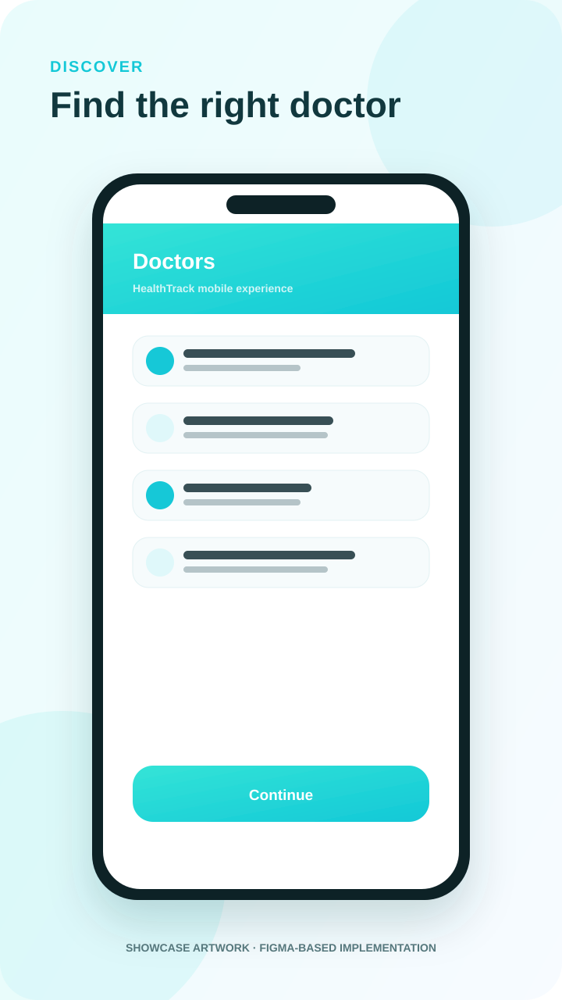
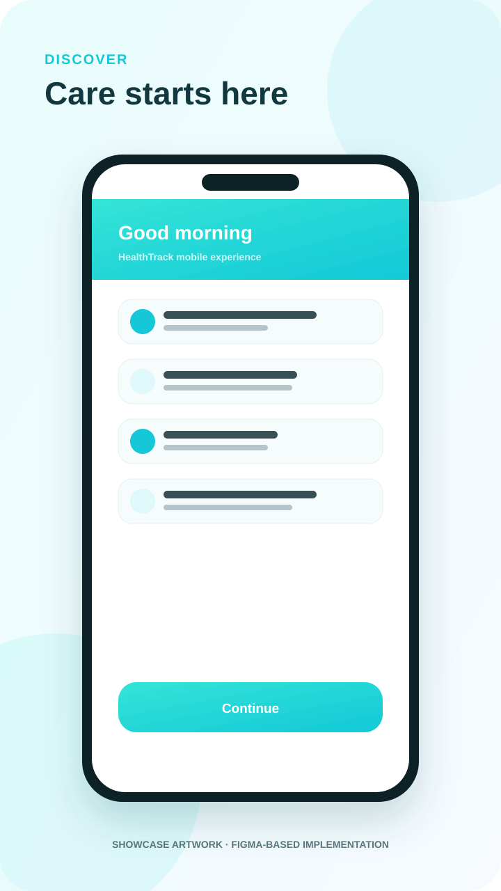
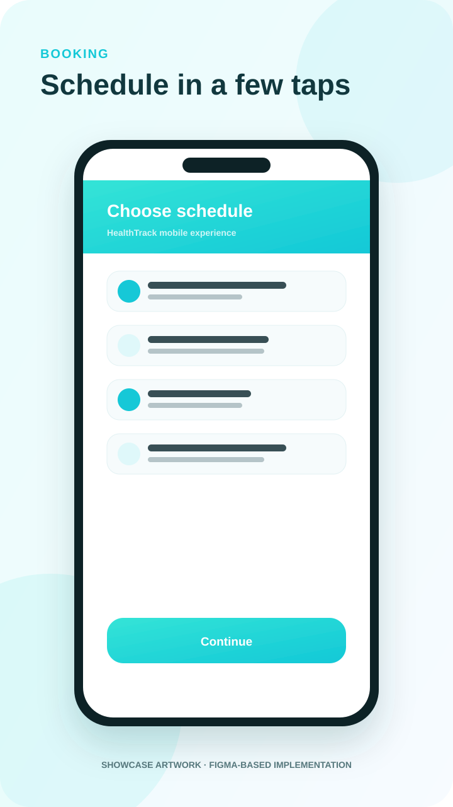
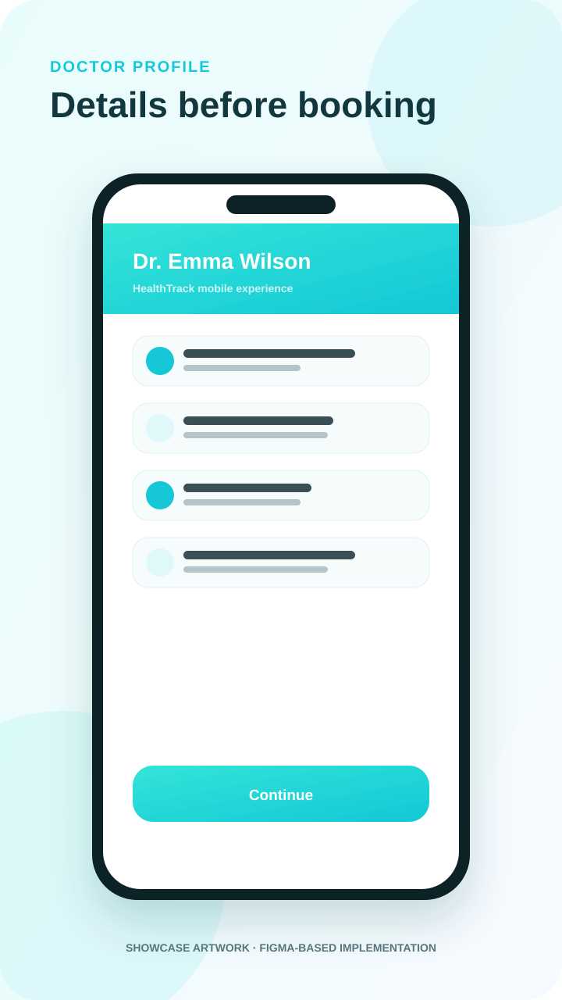
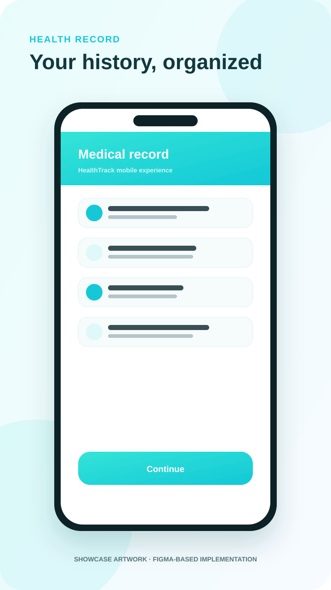

Discover doctors
Browse specialties, filter doctors, open profiles, review ratings and save favorites.
FIGMA TO FLUTTER · 61 SCREENS
HealthTrack turns a full Figma Community UI system into a connected mobile product experience: doctor discovery, booking, appointments, records, pharmacy, messaging, favorites and payment flows.



PRODUCT EXPERIENCE
The implementation is not a collection of disconnected mock screens. Navigation, shared state, reusable components and session data connect the core journeys into one coherent app.
Browse specialties, filter doctors, open profiles, review ratings and save favorites.
Select dates and time slots, review details, choose a payment method and track appointment states.
Navigate allergies, analysis, vaccinations and medical history inside a dedicated record experience.
Send session-persistent messages and move through pharmacy discovery, filtering and detail screens.
SELECTED INTERFACE VIEWS
Lightweight showcase artwork presents the implemented Figma-based journeys without shipping multi-megabyte screenshots.


ENGINEERING
The UI depends on repository contracts rather than a hard-coded service implementation. The downloadable portfolio build uses a local demo data source for deterministic testing, while the same boundary is ready for a REST or Firebase adapter.
flutter analyze and flutter testANDROID SHOWCASE BUILD
The APK is built from the same repository in portfolio mode. It demonstrates the connected app experience with local session data and does not claim live healthcare, payment processing or production medical services.